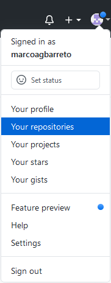
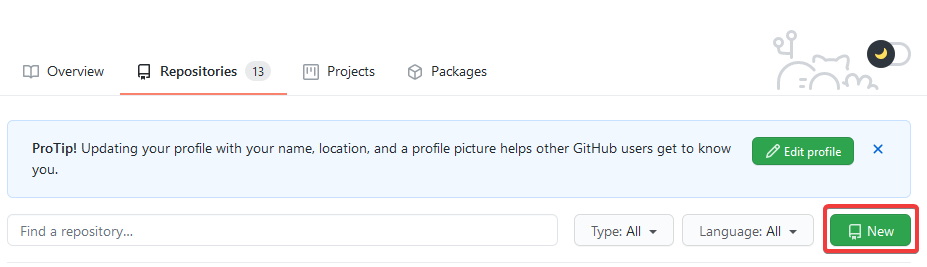
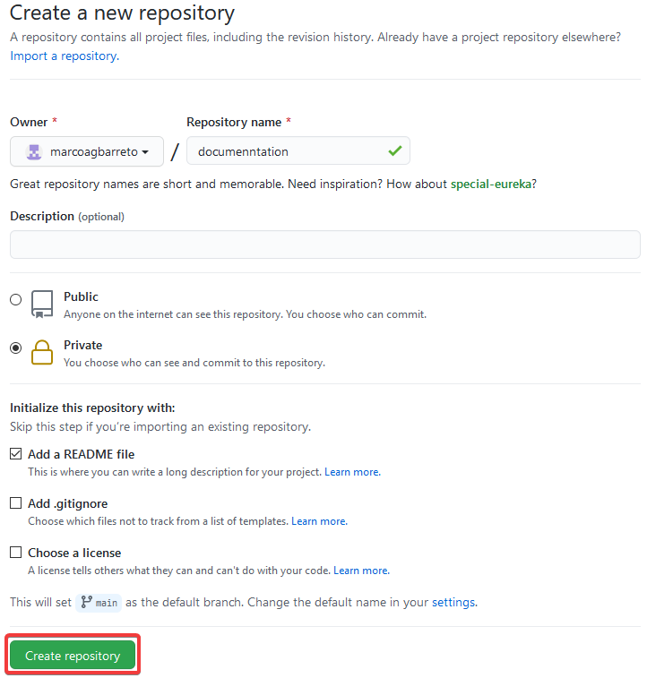
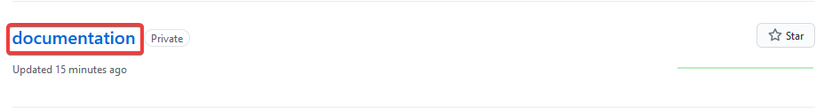
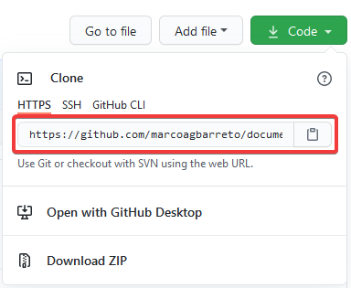
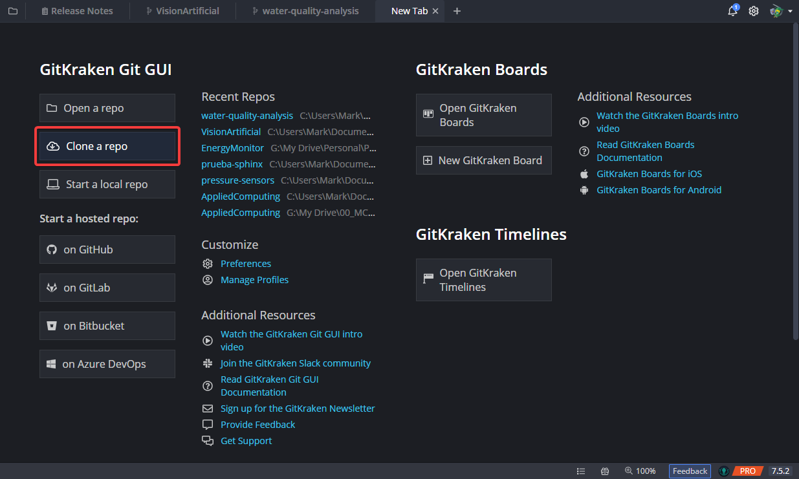
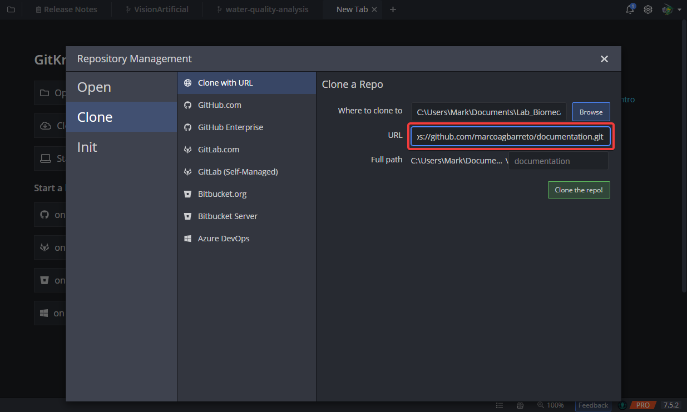
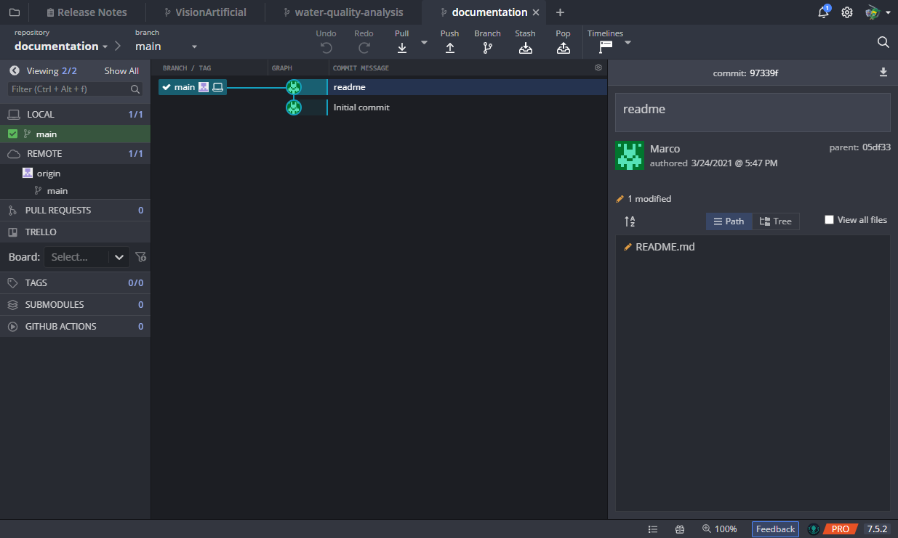
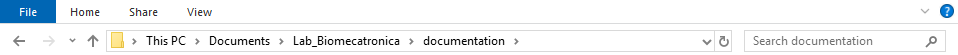
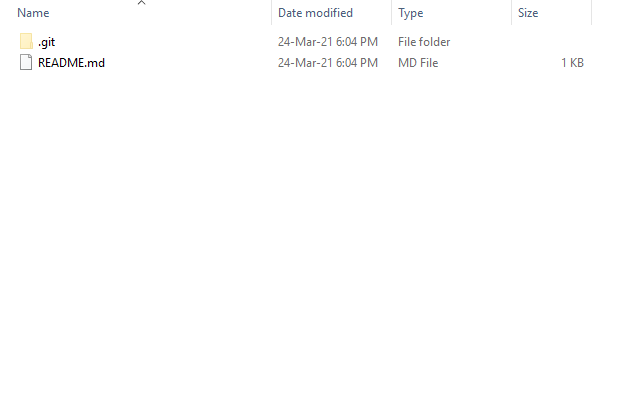

Installing a Github Repository¶
Technically, we are not going to install anything, but the title looks neat beside to the others installation guides. But, surely we are going to make an integration with GitHub. For this process, I asume you have a GitHub account already.
Note
You may use Sphinx and build your documentation without GitHub. I find useful using this cloud based version manager to share projects with other people, specially if 2 or more are involved.
Go to the GitHub Web page. Log in into your account. In the top right corner click on your profile icon and navigate to your repositories.
Then create a new repository by clicking on the New button.
Fill in the information. Add a name to the repository, in my case I chose the repository to be private, add a README file, and click on Create repository
Once created, go to your repositories again an click on your new repository, mine, named
documentation.Then copy the URL of your repository by clicking on the Code button to display the URL.
For this next step you will need a Git Client. In my case I’m using GitKraken with a student license. You can check about Git Clients here Installing a Git Client. Open GitKraken, you will see something like this. Then, click on Clone a repo
Paste the URL from your repository in the URL box and hit Clone the repo!.
Finally you should have a cloned repository in your computer. In your GitKraken you should see the initial commit in the tree section.
Open up the Windows explorer and go to your folder containing the project.
You should see something like this with the README file.
